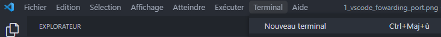
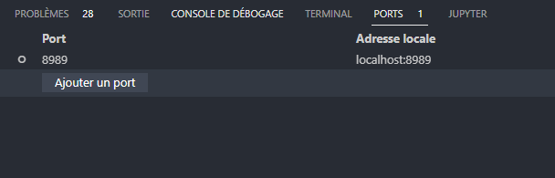

Introduction¶
Maintenant, que vous avez vu comment installer le projet, nous allons voir ensemble comment l’utiliser et ceci étapes par étapes.
Attention
Avant de passer à la prochaine étape assurez de bien avoir installé les prérequis ainsi que d’avoir créé votre premier site avec MkDocs.
Comment on se sert du projet ?¶
Préparation¶
Si vous avez tout bien installé, aller dans le répertoire du projet et vous devriez avoir ceci :
Myd-project/
│
├── debian_myd/
│ ├── build-debian.sh
│ └── debian_myd.dockerfile
│
├── python_myd/
│ ├── build-python.sh
│ └── python3.10.4.dockerfile
│
├── nginx/
│ ├── build-myd-docs.sh
│ ├── myd-docs.dockerfile
│ └── run-nginx.sh
|
├── conf/
| └── exemple.conf
|
├── logs/
|
├── requirement.txt
|
└── myd.py
On peut désormais regarder comment le projet fonctionne en utilisant la commande suivante :
$ (env-myd) python myd.py --help
Usage: myd.py [OPTIONS] COMMAND [ARGS]...
╭─ Options ──────────────────────────────────────────
--install-completion Install completion for the current shell.
--help Show this message and exit.
--show-completion Show completion for the current shell, to copy it
or customize the installation.
╭─ Commands 💻 ───────────────────────────────────────
build Build each Docker container as needed to run. 🧱
config Create configuration file for Myd. ✍
run Launches the Nginx server. 🚀
Nous verrons plus tard ensemble comment utiliser les différentes commandes.
Création du fichier de configuration¶
Pour pouvoir utiliser Myd, il vous faudra au préalable générer le fichier de configuration.
Attention
Le fichier de configuration est formaté de manière que Myd puisse comprendre les différentes informations nécessaires à son bon fonctionnement. Vous ne pouvez pas changer l’ordre des lignes ou ajouter des commentaires.
Pour générer le fichier de configuration dans le bon format que Myd à besoins, il suffit d’utiliser la commande config.
Regardons comment la commande fonctionne :
$ (env-myd) python myd.py config --help
Usage: myd.py config [OPTIONS]
Create configuration file for Myd. ✍
╭─ Options ──────────────────────────────────────────────────
--edit --no-edit Used to modify any existing configuration file
[default: no-edit]
--help Show this message and exit.
On peut désormais crée notre premier fichier de configuration.
$ (env-myd) python myd.py config
<span style="color: lime;">Input name you want for configuration file:</span>
$ (env-myd) exemple
<span style="color: lime;">Input name you want for configuration file:</span>
$ (env-myd) votre-url-docker
<span style="color: lime;">Input Python version (3.X.X):</span>
$ (env-myd) 3.10.4
<span style="color: lime;">Input GitHub Token:</span>
$ (env-myd) votre_token_GitHub
<span style="color: lime;">Input GitHub Repository:</span>
$ (env-myd) https://github.com/votre-nom-d'utilisateur/nom-du-repo/archive/nom-de-la-branche.zip
<span style="color: lime;">Input external port will be used to run server:</span>
$ (env-myd) 8989
<span style="color: lime;">Success</span>: The file '<span style="color: red;">exemple.conf</span>' has been created successfully
Maintenant, que le fichier est créé, vous devriez avoir un fichier .conf dans le dossier conf du projet.
Il devrait être présenté comme ceci :
REPO_DOCKER_URL=votre-url-docker
PYTHON_VERSION=3.10.4
GIT_TOKEN=votre_token_github
GIT_REPO=https://github.com/votre-nom-d'utilisateur/nom-du-repo/archive/nom-de-la-branche.zip
EXT_PORT=8989
Attention
L’URL du répertoire GitHub doit être formaté comme ci-dessus, vous ne pouvez pas simplement faire un copié de l’URL. Il ne faut également pas de / à la fin de votre URL Docker.
Mise en place des containers¶
Pour pouvoir faire fonctionner notre serveur web Nginx, il faut au préalable établir le container dans lequel on retrouveras notre site web généré par MkDocs.
Regardons comment cela fonctionne :
$ (env-myd) python myd.py build --help
Usage: myd.py build [OPTIONS] File Option
Build each Docker container as needed to run. 🧱
╭─ Arguments ─────────────────────────
file File Enter which configuration file you want use:
[exemple.conf, ...][required]
╭─ Options ───────────────────────────
option Option Use to build specific container: debian, python,
nginx [default: all]
--help Show this message and exit.
On peut voir que contrairement à config on a ici un argument obligatoire qui est le fichier que vous avez normalement créé précédemment.
Avant de continuer regardons à quoi sert l’argument option. Myd a besoin de créer différents containers pour établir le serveur web final.
On crée tout d’abord un container Docker avec un image Debian bulleye slim qui est l’environnement Linux dans lequel notre serveur web va être déployés.
Ensuite, on crée notre propre container Python depuis l’image Debian où on installe donc Python.
Enfin, on crée le container Nginx en y ajoutant les pages de notre site web récupéré depuis le lien du répertoire GitHub présent dans le fichier de configuration.
Par défaut l’argument option est égal à all ce qui signifie que tous les containers vont être recréé. Cependant, on n’a pas toujours besoin de reconstruire tous les containers, c’est pour ça qu’option permet de construire spécifiquement le container choisis.
Note
La commande build peux prendre un long moment la première fois pour générer pas de panique tant que le chargement est en cour c’est que les containers sont en train d’être construit.
Pour notre premier lancement, nous allons effectuer la commande suivante :
$ (env-myd) python myd.py build exemple.conf
Building debian container...
<span style="color: lime;">The debian container has been successfully built</span>
Building python container...
<span style="color: lime;">The python container has been successfully built</span>
Building nginx container...
<span style="color: lime;">The nginx container has been successfully built</span>
<span style="color: cyan;">Everything finished being built !</span>
Info
Si vous souhaitez voir ce qu’a renvoyé chacun des containers, vous trouverez dans le dossier logs tous les fichiers logs des différents containers.
Si vous voyez le message vous disant que tout a bien été construit, vous pouvez maintenant passer à la prochaine étape, si vous avez quelconque souci hésité pas à lire les informations de votre fichier de configuration ainsi que les fichiers logs.
Lancement de Myd¶
Maintenant, vous êtes prêt pour le lancement de votre site hébergé par Nginx. Regardons comment cela fonctionne :
$ (env-myd) python myd.py run --help
Usage: myd.py run [OPTIONS] File External_port
Launches the Nginx server. 🚀
╭─ Arguments ─────────────────────────
file File [required] Enter which configuration file you
want use: [exemple.conf, ...]
ext_port External_port [required] External port web server will use
╭─ Options ───────────────────────────
--help Show this message and exit.
Vous devez une nouvelle fois ici spécifier votre fichier de configuration à utiliser, mais aussi le port externe que vous souhaitez utiliser. Faîtes de sortes à ce que le port soit une valeur haute entre 8000 et 9000 par exemple pour éviter les conflits avec des ports pouvant déjà être utilisée par d’autres programmes.
Une fois les containers construits, vous pouvez lancer la commande ci-dessous :
$ (env-myd) python myd.py run me.conf 8989
Running nginx container on external port: 8989...
<span style="color: lime;">Success: The server is running on external port 8989</span>
Info
Il est possible que lorsque vous effectuez des modifications sur votre site sur GitHub cela ne fonctionne pas, il faut supprimer les images Docker (Docker utilise un cache est votre site n’est pas télécharger à nouveau depuis votre répertoire).
Si tout, c’est bien passé, vous devriez pouvoir accéder à votre page web, avant cela assurer vous d’avoir fait la redirection de port.
Pour le faire, vous devrez vous rendre dans Visual Studio Code. Puis ouvrez un terminal en cliquant ici :

Maintenant, vous devriez avoir une petite fenêtre en bas de l’écran qui s’est ouvert.
Pour l’exemple lors de la configuration, j’ai choisi le port 8989. Il ne vous reste plus qu’à ajouter votre port en cliquant sur “Ajouter un port”.

Enfin, vous pouvez désormais accéder à votre page web en marquant l’URL suivant:
http://localhost:votre-port/
Si tout, c’est bien passé, vous devriez voir votre site apparaître !
Remerciment
Je vous remercie d’avoir lu jusqu’ici, j’espère avoir été claire dans mes explications.
Vous souhaitez mettre votre site sur GitHub Pages, pour ce faire rendez-vous ici